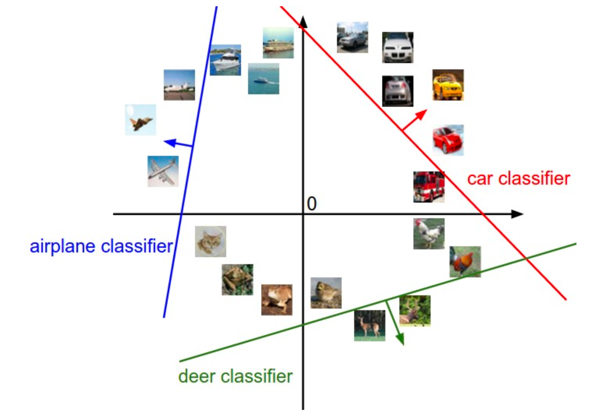
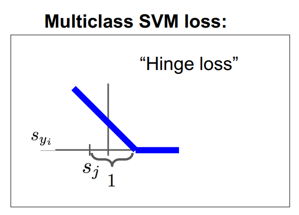

线性分类器
之前学习的KNN分类器存在以下不足：
KNN分类器要存储所有训练数据，非常耗费空间
KNN分类器每次预测都需要扫描所有的训练数据，非常耗费时间
线性分类器通过构建以下两个函数：
- score function：将图像映射成一个分数，为每个类别打分，表示对应到每个类别可能的概率
- loss function：反映预测标签与真实标签的差值，从而优化score function
通过以上构建，将问题转化为一个最优化问题：优化score function，从而使loss function最小。
这个方法中只需要存储score function，而不需要存储所有训练数据，避免了KNN分类器的空间弊端；且score function采用矩阵乘法的方式，通常能够并行化处理，避免了KNN的时间弊端。
评估函数（score function）
基本模型
对于一张图片，都可以视为一个$D$维向量。假设分类器需要区分$K$种类别，定义一个score function $f:R^D\rightarrow R^K$，将$D$维空间向量映射到$K$维空间中，对于$K$维空间中每一维度的值表示这一个维度的评分。
在最简单的线性分类器中，定义评估函数：
$$f(x_i, W, b) = Wx + b$$
$W[D\times K]$表示weights（权重），$x[N\times D]$表示输入N张D维图片的向量，$b[K]$表示bias（偏差），

几何理解
运用线性分类器后，每张图片都可以看作K维空间的一个点，$W$中的每行相当于一个分类类别的K维空间超平面，如下图（将高维空间压缩至二维）所示：
改变$W$中一行其中的值，相当于对应的超平面旋转一定角度，$b$则表示对应平面平移一段距离。箭头表示分值线性上升的方向，箭头指向的一侧均为正值，另一侧均为负值。
预测过程
def predict(self, X):
"""
Use the trained weights of this linear classifier to predict labels for
data points.
Inputs:
- X: A numpy array of shape (N, D) containing training data; there are N
training samples each of dimension D.
Returns:
- y_pred: Predicted labels for the data in X. y_pred is a 1-dimensional
array of length N, and each element is an integer giving the predicted
class.
"""
y_pred = np.zeros(X.shape[0])
y = np.dot(X, self.W)
y_pred = np.argmax(y, axis = 1)
# *****END OF YOUR CODE (DO NOT DELETE/MODIFY THIS LINE)*****
return y_pred损失函数（loss function)
对于上面猫猫图的预测可以发现，cat类得分最低，说明$W$矩阵是不合理的，我们需要另一个函数来量化score function的合理性，进而优化score function。这样的函数就称为损失函数，
Multi-class SVM loss
多分类支持向量机分类器的损失函数：$L_i = \sum_{j\neq y_i} max(0, s_j-s_{y_i}+1)$
对应图形（也被称为铰链函数）：
softmax loss
softmax分类器将每个评估得分进行归一化：$\frac{e^{s_i}}{\sum_j e^{s_j}}$，从而使评分具有概率意义，表示这个类别预测的把握程度。
softmax分类器的损失函数：$L_i=-\log \frac{e^{s_i}}{\sum_j e^{s_j}}$，也称为交叉熵函数。
正则化损失
在训练中，$W$的选择并不是唯一的，可能会有多个$W$矩阵将损失函数降低到同一值，那对于多个模型我们应该如何选择呢？根据奥卡姆剃刀原理，我们希望模型越简单越好，同时也可以避免模型过拟合，提高模型的泛化能力。我们在损失函数后加上一个正则化项$R(W)$阻碍模型选择权值较大的权重。从而使损失函数变为:
$L=\frac{1}{N}\sum_i L_i +\lambda R(W)$
前半部分表示由于预测样本导致的损失值，后半部分表示权重的损失值，其中$\lambda$是正则化系数，也属于超参数，可以通过交叉验证来选取。
优化过程
随机梯度下降
有了score function与loss function，剩下的问题就是如何利用loss function 来优化score function？
对于一个优化问题，显然我们可以求出loss function的梯度，每次往梯度下降的方向更新权重，从而使得loss函数能够不断减小。
但是，当梯度下降应用在大尺度的任务中时，训练集可能有上百万个样本，因此计算损失函数同时计算出梯度并更新的操作需要针对整个训练集，这是十分浪费并且有时候是无法实现的（如果内存太小就会存不下所有样本）。一个常用的方法是将训练集随机划分为多个小批次，每次只对这一个批次的样本进行计算损失值以及梯度，然后用这个梯度进行更新参数。代码如下：
# Vanilla Minibatch Gradient Descent
while True:
data_batch = sample_training_data(data, 256) # sample 256 examples
weights_grad = evaluate_gradient(loss_fun, data_batch, weights)
weights += - step_size * weights_grad # perform parameter update梯度计算方式
- 数值梯度：比较慢，且是一个近似值，但是比较简单
- 解析梯度：快速精确但是由于需要推导分析，所以容易出错
Multiclass-SVM损失函数梯度

使用循环实现：
def svm_loss_naive(W, X, y, reg):
"""
Structured SVM loss function, naive implementation (with loops).
Inputs have dimension D, there are C classes, and we operate on minibatches
of N examples.
Inputs:
- W: A numpy array of shape (D, C) containing weights.
- X: A numpy array of shape (N, D) containing a minibatch of data.
- y: A numpy array of shape (N,) containing training labels; y[i] = c means
that X[i] has label c, where 0 <= c < C.
- reg: (float) regularization strength
Returns a tuple of:
- loss as single float
- gradient with respect to weights W; an array of same shape as W
"""
dW = np.zeros(W.shape) # initialize the gradient as zero
# compute the loss and the gradient
num_classes = W.shape[1]
num_train = X.shape[0]
loss = 0.0
for i in range(num_train):
scores = X[i].dot(W)
correct_class_score = scores[y[i]]
for j in range(num_classes):
if j == y[i]:
continue
margin = scores[j] - correct_class_score + 1 # note delta = 1
if margin > 0:
loss += margin
dW[:, j] += X[i]
dW[:, y[i]] -= X[i]
# Right now the loss is a sum over all training examples, but we want it
# to be an average instead so we divide by num_train.
loss /= num_train
dW /= num_train
# Add regularization to the loss.
loss += reg * np.sum(W * W)
dW += reg * 2 * W
return loss, dW
使用numpy向量运算实现：
def svm_loss_vectorized(W, X, y, reg):
"""
Structured SVM loss function, vectorized implementation.
Inputs and outputs are the same as svm_loss_naive.
"""
loss = 0.0
dW = np.zeros(W.shape) # initialize the gradient as zero
scores = X.dot(W)
num_train = X.shape[0]
correct_class_scores = scores[np.arange(num_train), y]
correct_class_scores = np.reshape(correct_class_scores, (num_train, -1))
margin = scores - correct_class_scores + 1.0
margin[np.arange(num_train), y] = 0.0
margin = np.maximum(margin, 0.0)
loss += np.sum(margin) / num_train
loss += reg * np.sum(W * W)
margin[margin > 0] = 1
row_sum = np.sum(margin, axis = 1)
margin[np.arange(num_train), y] = -row_sum
dW = np.dot(X.T, margin) / num_train
dW += 2 * reg * W
return loss, dWsoftmax损失函数梯度

使用循环实现：
def softmax_loss_naive(W, X, y, reg):
"""
Softmax loss function, naive implementation (with loops)
Inputs have dimension D, there are C classes, and we operate on minibatches
of N examples.
Inputs:
- W: A numpy array of shape (D, C) containing weights.
- X: A numpy array of shape (N, D) containing a minibatch of data.
- y: A numpy array of shape (N,) containing training labels; y[i] = c means
that X[i] has label c, where 0 <= c < C.
- reg: (float) regularization strength
Returns a tuple of:
- loss as single float
- gradient with respect to weights W; an array of same shape as W
"""
# Initialize the loss and gradient to zero.
loss = 0.0
dW = np.zeros_like(W)
num_train = X.shape[0]
num_classes = W.shape[1]
for i in range(num_train):
scores = X[i].dot(W)
scores -= max(scores) #让数值更稳定
scores = np.exp(scores)
softmax = scores / np.sum(scores)
loss += -np.log(softmax[y[i]])
for j in range(num_classes):
dW[:, j] += softmax[j] * X[i]
dW[:, y[i]] -= X[i]
loss /= num_train
loss += reg * np.sum(W * W)
dW /= num_train
dW += reg * 2 * W
return loss, dW
使用numpy向量运算实现：
def softmax_loss_vectorized(W, X, y, reg):
"""
Softmax loss function, vectorized version.
Inputs and outputs are the same as softmax_loss_naive.
"""
# Initialize the loss and gradient to zero.
loss = 0.0
dW = np.zeros_like(W)
num_train = X.shape[0]
num_classes = W.shape[1]
scores = X.dot(W)
scores -= np.max(scores, axis=1, keepdims=True)
scores = np.exp(scores)
softmax = scores / np.sum(scores, axis=1, keepdims=True)
loss += -np.sum(np.log(softmax[np.arange(num_train), y]))
loss /= num_train
loss += reg * np.sum(W * W)
softmax[np.arange(num_train), y] -= 1.0
dW = np.dot(X.T, softmax)
dW /= num_train
dW += reg * 2 * W
return loss, dW线性分类器训练过程
训练函数
def train(
self,
X,
y,
learning_rate=1e-3,
reg=1e-5,
num_iters=100,
batch_size=200,
verbose=False,
):
"""
Train this linear classifier using stochastic gradient descent.
Inputs:
- X: A numpy array of shape (N, D) containing training data; there are N
training samples each of dimension D.
- y: A numpy array of shape (N,) containing training labels; y[i] = c
means that X[i] has label 0 <= c < C for C classes.
- learning_rate: (float) learning rate for optimization.
- reg: (float) regularization strength.
- num_iters: (integer) number of steps to take when optimizing
- batch_size: (integer) number of training examples to use at each step.
- verbose: (boolean) If true, print progress during optimization.
Outputs:
A list containing the value of the loss function at each training iteration.
"""
num_train, dim = X.shape
num_classes = (
np.max(y) + 1
) # assume y takes values 0...K-1 where K is number of classes
if self.W is None:
# lazily initialize W
self.W = 0.001 * np.random.randn(dim, num_classes)
# Run stochastic gradient descent to optimize W
loss_history = []
for it in range(num_iters):
X_batch = None
y_batch = None
idx = np.random.choice(num_train, batch_size, replace = True)
X_batch = X[idx]
y_batch = y[idx]
# evaluate loss and gradient
loss, grad = self.loss(X_batch, y_batch, reg)
loss_history.append(loss)
# perform parameter update
self.W -= grad * learning_rate
if verbose and it % 100 == 0:
print("iteration %d / %d: loss %f" % (it, num_iters, loss))
return loss_history梯度检测
# Once you've implemented the gradient, recompute it with the code below
# and gradient check it with the function we provided for you
# Compute the loss and its gradient at W.
loss, grad = svm_loss_naive(W, X_dev, y_dev, 0.0)
# Numerically compute the gradient along several randomly chosen dimensions, and
# compare them with your analytically computed gradient. The numbers should match
# almost exactly along all dimensions.
from cs231n.gradient_check import grad_check_sparse
f = lambda w: svm_loss_naive(w, X_dev, y_dev, 0.0)[0]
grad_numerical = grad_check_sparse(f, W, grad)
# do the gradient check once again with regularization turned on
# you didn't forget the regularization gradient did you?
loss, grad = svm_loss_naive(W, X_dev, y_dev, 5e1)
f = lambda w: svm_loss_naive(w, X_dev, y_dev, 5e1)[0]
grad_numerical = grad_check_sparse(f, W, grad)numerical: 0.630370 analytic: 0.630370, relative error: 8.891190e-10
numerical: -9.484052 analytic: -9.484052, relative error: 9.805496e-12
numerical: -54.907995 analytic: -54.907995, relative error: 4.217344e-12
Inline Question 1
It is possible that once in a while a dimension in the gradcheck will not match exactly. What could such a discrepancy be caused by? Is it a reason for concern? What is a simple example in one dimension where a gradient check could fail? How would change the margin affect of the frequency of this happening? Hint: the SVM loss function is not strictly speaking differentiable
$\color{blue}{\textit Your Answer:}$
- 可能会在某一维度不匹配
- hinge函数在x=1的点是不可导的。
- 例如，$f(x) = max(0, x)$在$x = \frac{h}{10}$处用算术法$f(x) = \frac{f(x + h) - f(x - h)}{2h}|_{x=\frac{h}{10}}=\frac{11}{21}$,用解析法计算出来$f’(x)=1$。即，在趋近于0的点会产生误差。
- 合理地选择margin计算中的$\Delta$值，避开出现在0附近
可视化训练效果
from cs231n.classifiers import LinearSVM
svm = LinearSVM()
tic = time.time()
loss_hist = svm.train(X_train, y_train, learning_rate=1e-7, reg=2.5e4,
num_iters=1500, verbose=True)
toc = time.time()
print('That took %fs' % (toc - tic))
# A useful debugging strategy is to plot the loss as a function of
# iteration number:
plt.plot(loss_hist)
plt.xlabel('Iteration number')
plt.ylabel('Loss value')
plt.show()
超参数的选取
# Use the validation set to tune hyperparameters (regularization strength and
# learning rate). You should experiment with different ranges for the learning
# rates and regularization strengths; if you are careful you should be able to
# get a classification accuracy of about 0.39 (> 0.385) on the validation set.
# Note: you may see runtime/overflow warnings during hyper-parameter search.
# This may be caused by extreme values, and is not a bug.
# results is dictionary mapping tuples of the form
# (learning_rate, regularization_strength) to tuples of the form
# (training_accuracy, validation_accuracy). The accuracy is simply the fraction
# of data points that are correctly classified.
results = {}
best_val = -1 # The highest validation accuracy that we have seen so far.
best_svm = None # The LinearSVM object that achieved the highest validation rate.
# Provided as a reference. You may or may not want to change these hyperparameters
learning_rates = [4e-6, 4e-7, 3e-7, 2e-7, 1e-7, 1e-8]
regularization_strengths = [666, 6666, 66666, 1e4, 1e5]
for lr in learning_rates:
for rs in regularization_strengths:
svm = LinearSVM()
svm.train(X_train, y_train, learning_rate=lr, reg=rs,
num_iters=1500, verbose=False)
y_train_pred = svm.predict(X_train)
train_accuracy = np.mean(y_train == y_train_pred)
y_val_pred = svm.predict(X_val)
val_accuracy = np.mean(y_val == y_val_pred)
results[(lr, rs)] = (train_accuracy, val_accuracy)
if val_accuracy > best_val:
best_val = val_accuracy
best_svm = svm
# Print out results.
for lr, reg in sorted(results):
train_accuracy, val_accuracy = results[(lr, reg)]
print('lr %e reg %e train accuracy: %f val accuracy: %f' % (
lr, reg, train_accuracy, val_accuracy))
print('best validation accuracy achieved during cross-validation: %f' % best_val)lr 1.000000e-08 reg 6.660000e+02 train accuracy: 0.218551 val accuracy: 0.220000
lr 1.000000e-08 reg 6.666000e+03 train accuracy: 0.227776 val accuracy: 0.224000
lr 1.000000e-08 reg 1.000000e+04 train accuracy: 0.232857 val accuracy: 0.241000
lr 1.000000e-08 reg 6.666600e+04 train accuracy: 0.321204 val accuracy: 0.333000…
lr 4.000000e-06 reg 1.000000e+04 train accuracy: 0.219449 val accuracy: 0.224000
lr 4.000000e-06 reg 6.666600e+04 train accuracy: 0.197163 val accuracy: 0.229000
lr 4.000000e-06 reg 1.000000e+05 train accuracy: 0.152429 val accuracy: 0.155000
best validation accuracy achieved during cross-validation: 0.388000
可视化交叉验证的结果
# Visualize the cross-validation results
import math
import pdb
# pdb.set_trace()
x_scatter = [math.log10(x[0]) for x in results]
y_scatter = [math.log10(x[1]) for x in results]
# plot training accuracy
marker_size = 100
colors = [results[x][0] for x in results]
plt.subplot(2, 1, 1)
plt.tight_layout(pad=3)
plt.scatter(x_scatter, y_scatter, marker_size, c=colors, cmap=plt.cm.coolwarm)
plt.colorbar()
plt.xlabel('log learning rate')
plt.ylabel('log regularization strength')
plt.title('CIFAR-10 training accuracy')
# plot validation accuracy
colors = [results[x][1] for x in results] # default size of markers is 20
plt.subplot(2, 1, 2)
plt.scatter(x_scatter, y_scatter, marker_size, c=colors, cmap=plt.cm.coolwarm)
plt.colorbar()
plt.xlabel('log learning rate')
plt.ylabel('log regularization strength')
plt.title('CIFAR-10 validation accuracy')
plt.show()
在测试集上运行
# Evaluate the best svm on test set
y_test_pred = best_svm.predict(X_test)
test_accuracy = np.mean(y_test == y_test_pred)
print('linear SVM on raw pixels final test set accuracy: %f' % test_accuracy)linear SVM on raw pixels final test set accuracy: 0.379000
可视化W每一列的值
# Visualize the learned weights for each class.
# Depending on your choice of learning rate and regularization strength, these may
# or may not be nice to look at.
w = best_svm.W[:-1,:] # strip out the bias
w = w.reshape(32, 32, 3, 10)
w_min, w_max = np.min(w), np.max(w)
classes = ['plane', 'car', 'bird', 'cat', 'deer', 'dog', 'frog', 'horse', 'ship', 'truck']
for i in range(10):
plt.subplot(2, 5, i + 1)
# Rescale the weights to be between 0 and 255
wimg = 255.0 * (w[:, :, :, i].squeeze() - w_min) / (w_max - w_min)
plt.imshow(wimg.astype('uint8'))
plt.axis('off')
plt.title(classes[i])
*Inline question 2*
Describe what your visualized SVM weights look like, and offer a brief explanation for why they look the way they do.
$\color{blue}{\textit Your Answer:}$ 部分图片跟所属类别相似，例如dog类很像一只带着蓝色项圈的泰迪坐在地上，car类很像一辆红色的小汽车行驶在水泥路上，deer类就像一只棕色的鹿穿行在绿色的丛林里。因为每个类别的weight都是从对应类别的图形中学习得来，所以得到的是对应类别的模板。
比较与总结
训练：在训练过程中，SVM损失函数当正确分类高于边界线一定阈值时就不再提升；softmax损失函数会不断push正确分类的概率越来越高
效果：在本例中，训练得到的SVM分类器在测试集上正确率为37.9%，softmax分类器正确率为38.1%，两者之间相差不大，但均比KNN分类器高了很多。